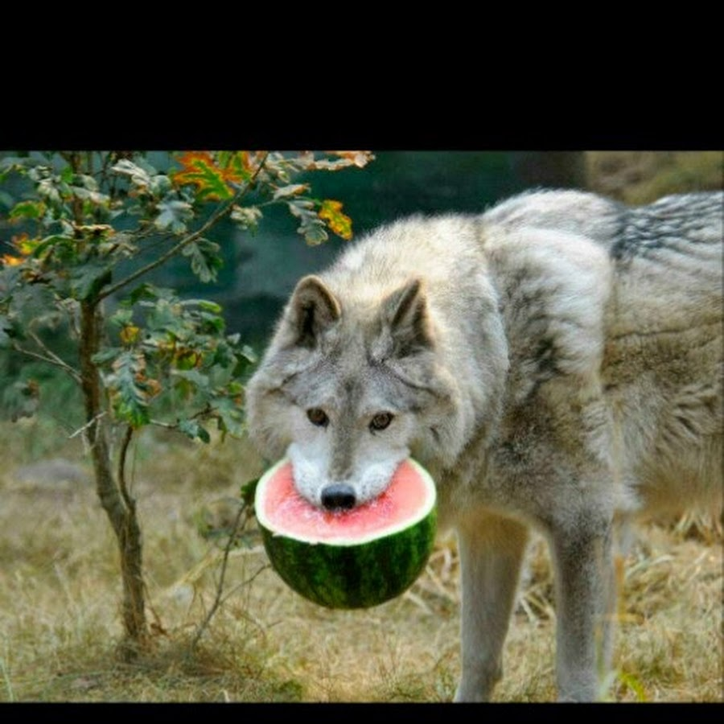

.jpg) |
|---|
|  |
Животный мир Беларуси насчитывает 457 видов позвоночных (в том числе 73 вида млекопитающих, 290 видов птиц, около 60 видов рыб) и более 20 тысяч видов беспозвоночных животных.
Важное хозяйственное значение имеют промыслово–охотничьи виды животных — лисица, куница, заяц, выдра, хорь, горностай, а также лось и дикий кабан.
Более 180 видов животных охраняются государством.